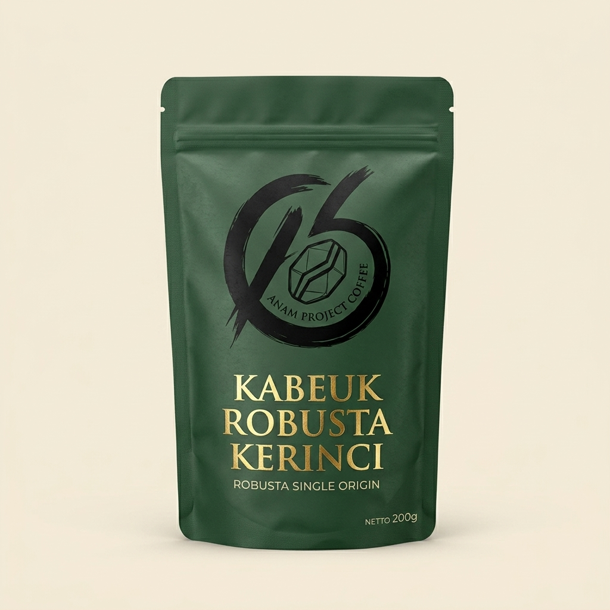
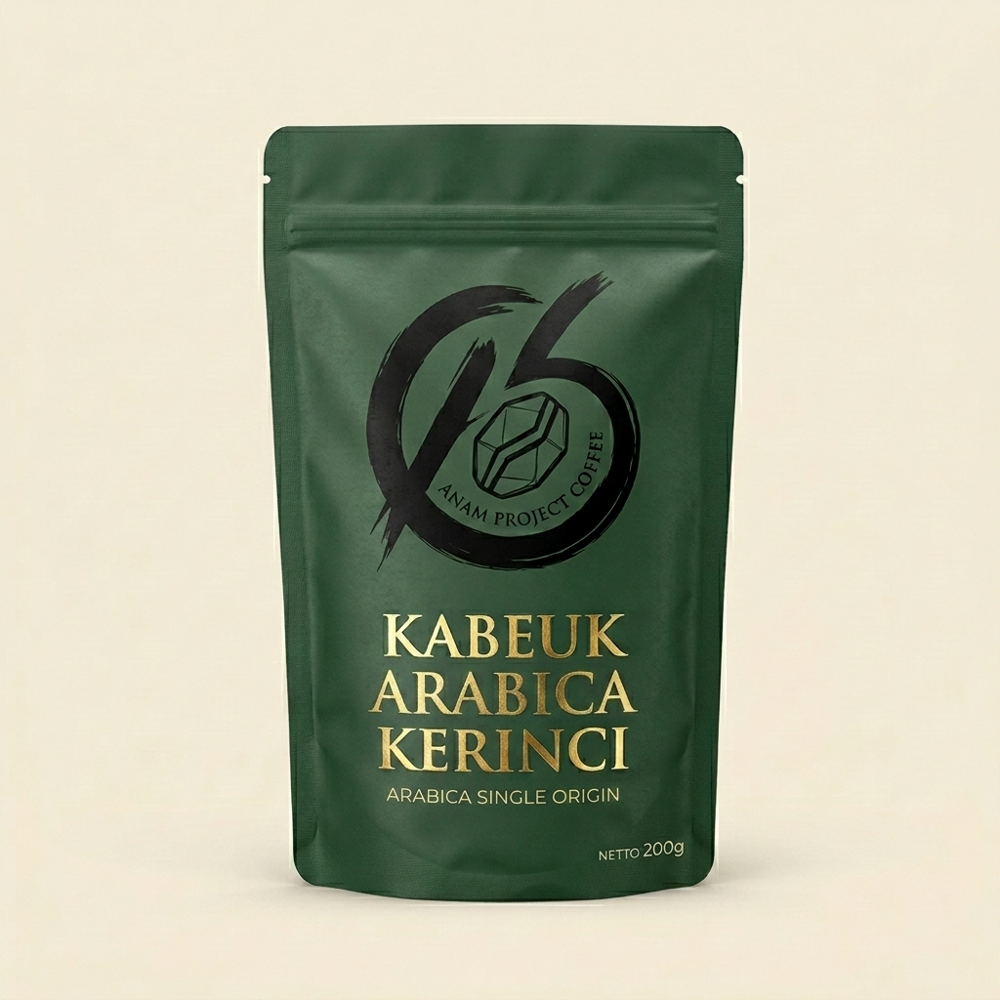
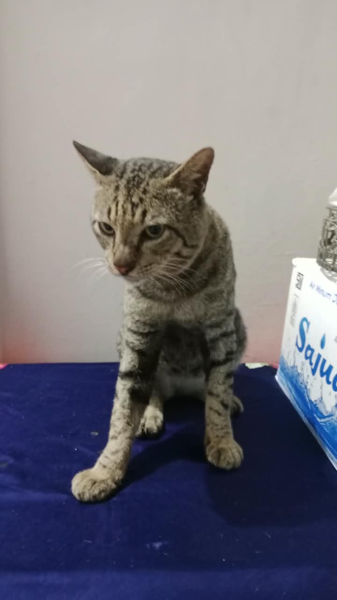
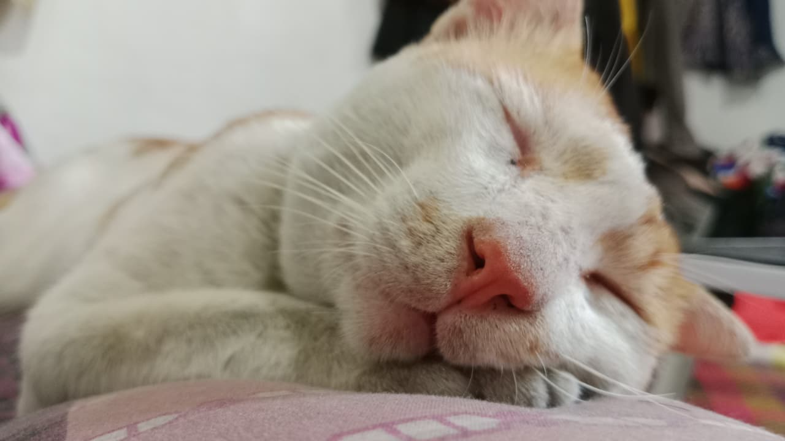
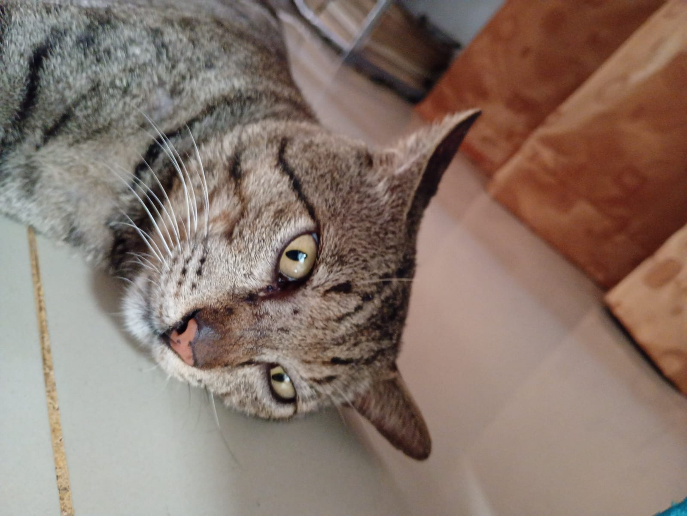
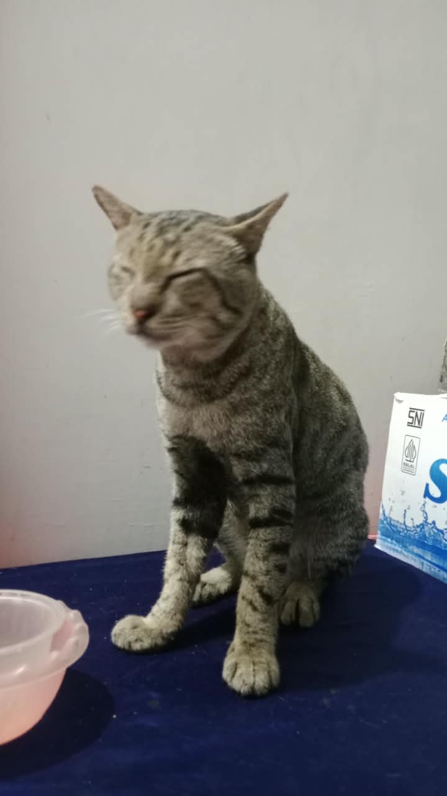
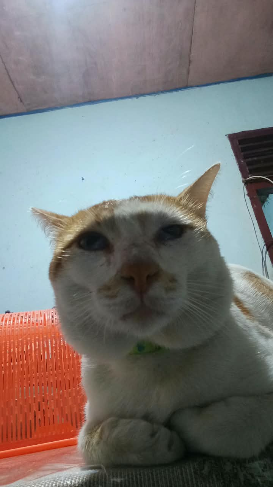

Kami meroasting biji kopi terbaik dari dataran tinggi Kerinci, Jambi. Memberdayakan petani lokal, menjaga keaslian rasa, untuk menghadirkan pengalaman ngopi yang sesungguhnya.
Anam Project Coffee didirikan dengan satu tujuan jelas: mengangkat nama kopi Kerinci ke tempat yang seharusnya.
Kami percaya kopi yang baik tidak lahir dari mesin yang mahal, melainkan dari tanah yang sehat, tangan petani yang teliti, dan proses roasting yang jujur. Di sinilah kami mengambil peran.
Kopi kami ditanam di lereng Gunung Kerinci pada ketinggian ideal (400 - 1700 MDPL), menghasilkan karakter rasa yang khas dan pekat.
Diroasting dengan hati-hati dalam skala kecil untuk memastikan profil rasa yang presisi di setiap batch produksi.
Kami bekerja sama langsung dan memberdayakan petani lokal Kerinci untuk memajukan ekosistem kopi daerah.
100% Kopi Kerinci asli yang disortir ketat. Bersertifikat Halal Indonesia (SPP-IRT terdaftar).

Kopi berkualitas dari pegunungan Kerinci (400-1000 MDPL) yang ditanam oleh petani lokal. Menghasilkan rasa yang kuat, penuh, dengan kadar kafein tinggi. Cocok bagi pencari tendangan kopi sejati.

Ditanam di dataran tinggi Kerinci (1000-1700 MDPL), Arabika ini menawarkan kompleksitas rasa yang elegan dengan sentuhan keasaman segar dan aroma floral yang memanjakan indra penciuman Anda.





Hanya *green bean* terbaik dari petani mitra yang masuk ke ruang roasting kami.
Diuji ketat untuk menemukan titik panggang (roast profile) yang menonjolkan karakter asli kopi.
Diroasting dengan mesin profesional dalam skala kecil untuk presisi tinggi.
Dikemas dengan baik agar kualitas, kesegaran, dan aroma kopi tetap utuh saat tiba.